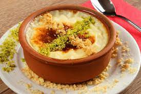

Yemek tariflerinin en tatlı, en sevilen ismi, sütlü tatlıların en besleyicisi, pirincin en güzel halidir sütlaç tarifi. Tencerede kıvam aldıktan sonra ısıya dayanıklı toprak kaplara paylaştırılıp fırında kızaran hali fırın sütlaç ismini alır. Çocukluk yıllarından aşina olduğumuz besleyici bir tatlıdır. Tarifler içinde özellikle sütlü tatlıların ve tatlı tariflerinin en şahanesidir! Ev yapımı sütlacı tam kıvamında ve tam ölçülü yapmak için birkaç püf noktasına ihtiyacınız var. Klasik sütlaçtan vazgeçemeyenlerin evde nefis sütlaçlar yapmasını sağlayacak olan ve en güzel sütlaç tarifine ulaşmanızı sağlayacak bu tarifi bir köşeye not edin deriz. Sütlü tatlıların en güzeli, en hafif sütlaç tarifi karşınızda! 